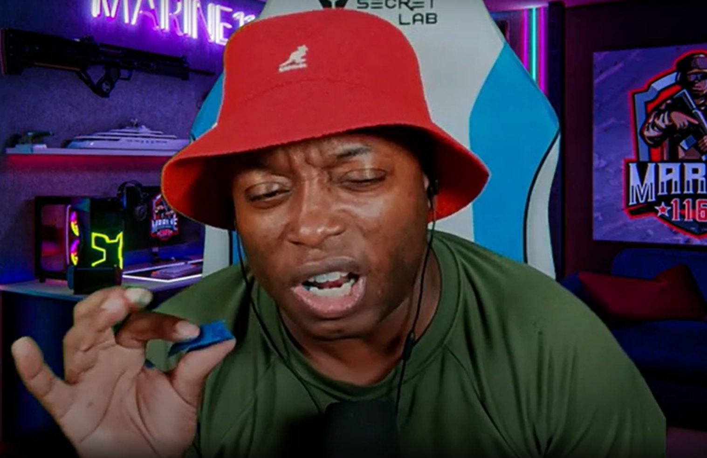
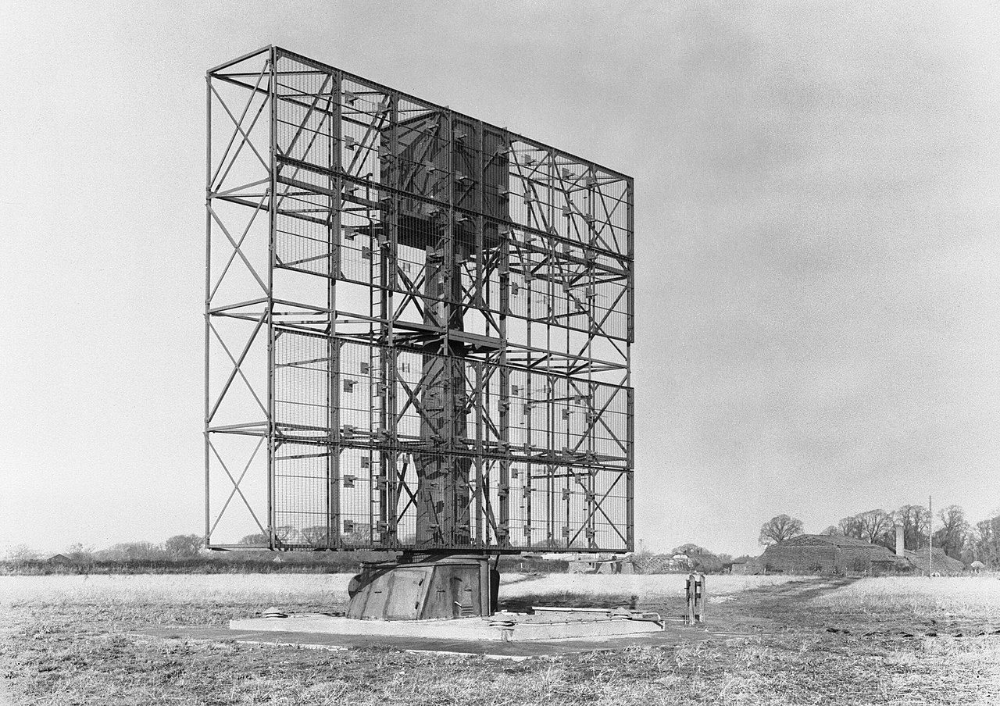
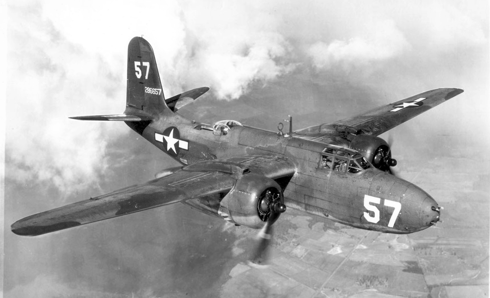
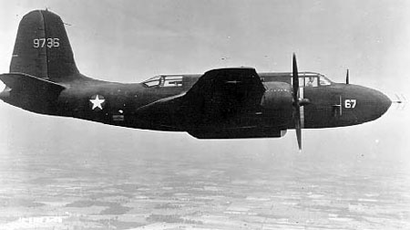
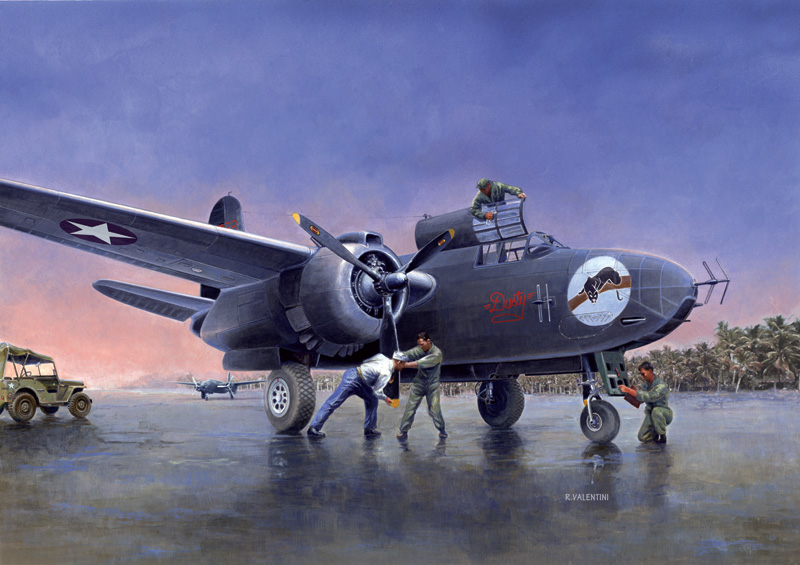
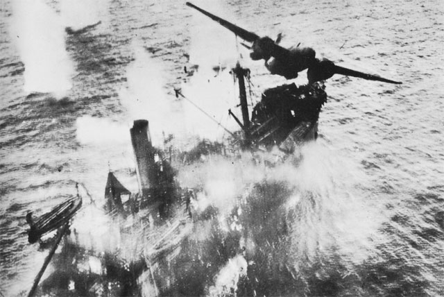
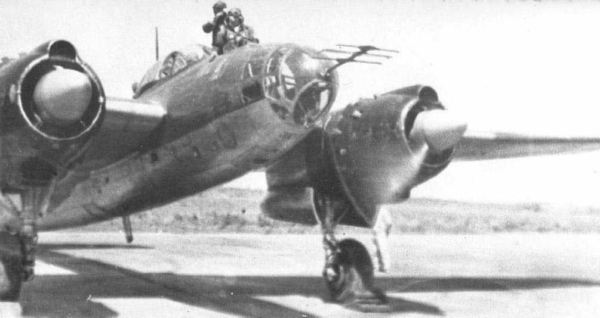

남태평양의 밤 하늘 - 과달카날에서의 야간 요격
게시: 2024-06-27T06:30:43+09:00
<Dumb and Dumber> 과달카날 전투는 결국 헨더슨 항공기지를 차지하기 위해 미일 양군의 수많은 생명들이 덧없이 스러진 일련의 육-해-공 전투. 그만큼 헨더슨 기지의 지리적 위치가 중요했다는 것인데, 일본해군의 제해권 장악이 여의치 않자 자연스럽게 일본육군의 지상전도 보급 및 병력 충원 문제로 패배로 끝났음. 하지만 일본군은 라바울에 이미 강력한 항공전력을 갖추고 있었으므로 원거리에서 끊임없이 헨더슨 기지에 대한 폭격이 가능. 하지만 그마저도 헨더슨 기지의 레이더 지원을 받은 미해병대 전투기들의 분전으로 1942년 말까지 일본기 570대가 격추되며 결국 좌절. 하지만 일본군의 최대 장점이자 단점이, 포기를 모르고 질척거린다는 점. 주간 폭격은 불가능하다고 판명되자, 1942년 11월부터 일본군은 별 효과도 없는 야간 폭격으로 전환하여 미해병대를 괴롭힘. 항공모함과는 달리 헨더슨 기지는 침몰하지 않는 대신 앉은뱅이 오리 신세라 어디로 움직이지도 숨지도 못하므로, 그냥 깜깜한 밤중에라도 날아가 그 위치에 폭탄만 떨구고 오면 된다고 판단한 것. 물론 이는 효과가 거의 0에 수렴하는 전법. 서로를 폭격으로 굴복시키겠다며 서로를 향해 야간에 폭격기를 잔뜩 날려보낸 영국과 독일은 모두 천문 항법을 이용한 야간 폭격이 이론상으로나 가능할 뿐 실제로는 항법사들의 미숙함과 측정 오차 때문에 사실상 아무 성과를 못낸다는 것을 깨닫고 있었음. 그래서 그들은 여러가지 전파 항법을 이용하여 그런 야간 폭격의 정밀도를 높이려 애쓰고 있었으나, 목표물이 눈에 훤히 보이는 주간 폭격에서도 제대로 목표물 타격이 어려운 마당에 야간 폭격의 효율은 여전히 떨어졌음. 하지만 일본군 수뇌부에게는 그런 것 따위 중요하지 않았음. 그저 포기하지 않고 적을 타격한다는 정신 자체가 중요했던 것. 그런 헛된 전시 행정으로 인해 일본은 가뜩이나 부족한 폭탄과 연료, 항공기들을 야간 폭격에 소모했지만, 야간 비행은 그 자체가 위험한 것. 미군이 아무런 방해를 하지 않는다고 해도 아무것도 안 보이는 깜깜한 야간에 미숙한 비행사들이 일으키는 각종 사고로 비전투 손실이 꽤 일어났음. 비록 폭격이 실제로 일으키는 피해가 거의 없다고 하더라도, 밤에 날아와 폭탄을 떨구고 가는 적 폭격기를 그냥 냅둘 수 없었던 것은 미군도 마찬가지. 과달카날에는 베를린을 지키는 것만큼 많은 대공포를 설치하지는 않았으므로, 결국 야간 폭격기들을 잡는 임무는 전투기에게 주어졌는데, 정작 미해병대에겐 공대공 레이더를 설치할 수 없는 F4F 와일드캣뿐. 뭘 어쩌란 말이냐? 안되면 되게 하라는 무지성 군인 정신은 일본군의 상징이었지만 미해병에게도 일맥상통하는 이야기. 보통 미해병대를 우스개로 '크레용'이라고 부르기도 하는데, 이는 2010년 이후 유행한 인터넷 밈(meme)으로서 미해병대는 머리가 나빠서 크레용을 먹기도 한다는 황당무계한 비하에서 나온 것. 그런데 실제로 1942년 말 과달카날의 미해병대는 공대공 레이더를 장착지도 않은 와일드캣을 타고 야간에 날아올라 일본해군의 야간 폭격기들에 대한 요격을 시도. 오로지 지상의 SCR-270 레이더의 관제를 받아 달빛에 의존하여 일본 폭격기들을 잡겠다는 것. 될 턱이 없었고 단 한 대도 잡지 못함. SCR-270은 방위각 오차가 너무 커서 야간에 적기가 맨눈으로도 보이는 200m 거리 안쪽까지 전투기를 유도할 수 없었기 때문.

(실제로 전직 미해병대원인 Marine1169이라는 유튜버가 크레용을 먹는 장면. 실제로는 저건 식용 재료로 만들어진 크레용이라고. 미해병을 크레용이라고 부르는 것은 분명히 비하이지만 우리나라 해병대를 비꼬는 '해병문학'처럼 크레용도 미해병대 본인들이 가장 많이 사용하는 자기 비하라고.) <남태평양의 야간 전투기> 이렇게 야밤에 서로 삽질을 해대던 과달카날의 야간 폭격 및 요격에 첫번째 전환을 일으킨 것은 뉴질랜드에서 영국제 지상 요격 관제 (ground control intercept, GCI) 레이더를 들고 온 뉴질랜드 관제팀. 이들이 들고온 레이더는 영국에서 독일공군의 야간 폭격기들을 잡아내던 것으로서 미제 SCR-270보다 더 정밀도가 높아서 야간 요격에 크게 도움이 될 것으로 기대되었음.

(이건 흔히 Final GCI로 불리던 AMES (Air Ministry Experimental Station) Type 7 레이더. 이 사진은 1945년 영국에서 촬영된 것으로서, 과달카날에 1942년 말에 들어온 것이 이 type인지는 불분명.) 게다가 미해병대가 혐오하던 미육군도 힘을 보태줌. 미육군 항공대가 야간 전투기로 개조된 A-20 Havoc 폭격기 1개 편대를 과달카날에 파견해준 것. 이건 영국제 AI (Airborne Intercept) Mk IV 레이더를 라이센스 생산한 SCR-540 공대공 레이더가 달려 있는 진짜 제대로 된 야간 전투기로서, 제식명도 P-70으로 붙여짐.

(Douglas A-20 Havoc. 중(中)형 폭격기이자 야간 전투기, 공격기. 1941년 초에 도입되었는데, 실은 미육군 항공대가 채택하기 전인 1939년에 당장 전쟁이 임박한 프랑스 공군이 먼저 이를 채택하고 무려 270대나 주문. 실제로 인도가 시작될 수 있었던 것은 이미 프랑스가 전쟁에 돌입한 후인 1939년 11월이었는데, 과연 중립국인 미국이 어떻게 프랑스에 이 전쟁 무기를 배송할 수 있었을까? 해답은 1939년 급히 제정된 Cash and Carry 법안. 어느 교전국이든 미국내에서 전쟁 물자를 사가도 좋으나 현장에서 현찰 박치기로 사가야 하며, 교전국으로 수송하는 책임은 교전국 당사자가 진다는 것. 그러니까 이론상으로는 나찌 독일도 중립국 미국에서 마음껏 무기를 사갈 수 있었으나, 당시 대서양을 지배하고 있던 것은 영국의 로열 네이비였으므로 사실상 불가능. 물론 그걸 다 감안해서 그런 법안을 만든 것. 아무튼 프랑스가 항복할 때까지 대략 70여대의 A-20 폭격기가 DB-7 B-3라는 이름으로 프랑스군에 인도됨. 프랑스군은 이 폭격기에 프랑스제 기총을 장착할 것을 요구하는 등 꽤 많은 개조를 요청하여 통과시켰는데, 우스운 부분은 주요 개조 요청 내용 중 하나는 계기판들의 미터법 표기. 고도를 feet 단위로 해놓으면 전세계에서 미군 및 영국군만 알아볼 수 있었기 때문. 이들은 분해된 상태로 미국 항구에서 프랑스 선박에 의해 북아프리카의 프랑스령 카사블랑카까지 운송된 뒤, 카사블랑카에서 조립되어 프랑스 본토로 날아감. 독일과의 전투에서 최소 8대가 상실되었고, 살아남은 기체들은 결국 연합군의 북아프리카 상륙작전인 Operation Torch에서 연합군을 공격하는데도 사용됨. 이후엔 다시 영국에서 자유 프랑스군 휘하에서 사용. 이 A-20 폭격기는 총 7,478대가 생산되었는데, 그중 1/3이 넘는 숫자는 소련에 공여되어 소련군으로 활약.)

(미육군도 전쟁 초기부터 야간 전투기의 필요성을 인식하고 일부 A-20 폭격기의 일부에 SCR-540 (영국제 AI Mk IV의 복제품) 공대공 레이더를 장착하여 야간 전투기로 개조하는 사업을 실시. 실제로 배송된 것은 1942년 9월. 야간 전투기로의 개조는 공대공 레이더를 장착하는 것 외에도 장탄수를 기총 하나당 120발로 줄이더라도 짧은 기회에 확실히 kill 시키기 위해 6정의 12.7mm 기총을 4정의 20mm 기총으로 교체한 것과, 야간에 적기를 추격하는 끈기를 필요로 하는 긴 비행을 위해 연료 탱크를 추가로 장착하는 것. SCR-540 자체는 폭탄창에 설치되었지만 그 특유의 화살촉 모양의 dipole이 달린 송수신 겸용(tranceiver) 안테나는 기총 사이에 위치.)

(P-70를 묘사한 그림. 저 dipole 안테나는 화살촉 모양으로 생긴 것이 특징인데, 아직 cavity magnetron 사용 이전이라 193MHz 주파수의 전파를 이용했으므로 저 화살촉 한변의 길이가 거의 30cm 정도.)

(그러나 A-20이 역시 가장 큰 명성을 떨친 곳은 일본군 선박들을 때려잡던 남태평양. 사진은 1944년 뉴기니 인근 해역에서 일본군 수송선에 대해 기총 사격과 함께 물수제비 폭격 (skip-bombing)을 가하는 A-20.) 이렇게 미해군, 미해병대, 미육군 항공대, 뉴질랜드군 레이더 관제사 등이 모두 힘을 합해 과달카날에 밤마다 날아드는 일본 폭격기를 잡아내기로 도원 결의. 그러나, 정작 이들 중 야간 전투기에 의한 야간 요격을 해본 경험이 있는 사람은 아무도 없었음. 결국 이들에겐 매일의 작전이 모두 새로운 도전이자 실험과 실패의 연속. 그러다 마침내 다음 해인 1943년 4월 19일 밤, P-70 야간 전투기가 일본 야간 폭격기를 격추하는 개가를 올림. 이는 CGI 레이더의 관제와 P-70 전투기의 공대공 레이더, 그리고 지상의 탐조등의 노력이 모두 결합되어 빚어낸 값진 성과. 그러나 딱 거기까지였음, 이전에도 이후로도 P-70은 아무런 전과를 올리지 못하고 일본군 못지 않게 항공기와 연료만 소모시킴. 이유는 P-70의 비행 성능 자체가 일본군 폭격기에 비해 너무 떨어져, 주간에 붙었다고 하더라도 요격 자체가 불가능했기 때문. 게다가 과달카날의 습하고 무더운 날씨에 지상 레이더건 항공기의 공대공 레이더건 그 진공관과 미세한 회로들이 견디질 못하고 쉽게 고장났음. 결국 과달카날의 미군이 채택한 야간 요격은 공대공 레이더는 없더라도 비행 성능이 좋은 P-38 전투기에, CGI 레이더로 기본 유도를 도와주고 탐조등으로 일본 폭격기들을 찾아내는 것. 의외로 이 방식으로 몇 대의 야간 폭격기들을 잡아냈다고.

(이건 드물게 보는 일본군 야간 전투기인 요꼬수까 P1Y2-S 쿄꼬 (極光, 오로라). 원래 요꼬수까 P1Y "Frances"라는 폭격기였으나, 전쟁 말기 미육군 항공대 B-29가 밤중에 날아와 일본 본토의 주요도시들을 활활 불태우는 것을 어떻게든 막아내기 위해 급히 개조해 만든 야간 폭격기. 나름 심혈을 기울여 만들었으나, 실전에서는 워낙 고공으로 날아오는 B-29에 대해 고공에서의 비행성능이 떨어져 도저히 요격이 불가능하여 다시 폭격기로 전환시켰다고.)